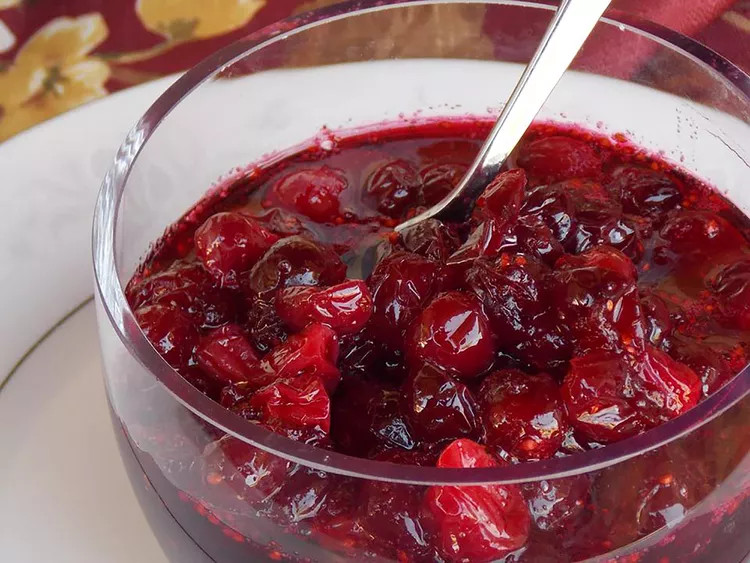

Cranberry Sauce Recipe

Description
With a total time of 20 minutes to make 16 servings. Every November, Americans debate the merits of canned cranberry sauce vs. fresh cranberry sauce. The canned sauce, with its signature shape and jiggly texture, is certainly nostalgic. Fresh sauce, meanwhile, usually has a more complex flavor (and a less gelatinous texture). Plus, when you make cranberry sauce from scratch, you're able to customize the ingredients and ratios to suit your taste.
We think you should give this fresh cranberry sauce a try. You definitely won't be disappointed!
Ingredients
- 1 cup water
- 1 cup white sugar
- 1(12 ounce) package fresh cranberries
Steps
- Gather all ingredients.
- Bring water to a boil in a saucepan; add sugar and cook until sugar is dissolved, about 5 minutes.
- Stir cranberries into the saucepan and bring to a boil. Reduce heat to low, and simmer until cranberries have popped and sauce is chunky, about 10 minutes or longer for desired consistency. The longer you cook it, the less chunky it will be.
- Pour sauce into a serving dish or jars and cover until ready to use; the pectin in the cranberries will make the cranberry sauce gel as it cools.
- Mix cranberry sauce with a fork before serving.